Preventative Risk Management — Part 2 (Portfolio Limits)
Turning the volatility engines into real stops, targets and hard portfolio limits — the numbers that keep a long/short book alive through any market.
Stops and targets on individual trades are only half of preventative risk management; the other half is the portfolio limits that stop one market move from wiping out one whole side of your book. This chapter builds the DoR and ATRP sheets from scratch, prices real stops and targets for ZNGA and ALGN, and pins down the exact gross, cash-net and beta-net limits that govern the strategy.
The gist
- Performance targets: a good R-Score is about 1.5 or higher, a great one is around 2 or above; a good win/loss rate is 60/40, with 55/45 okay and 65/35 really really good over the long term.
- Gross exposure = leverage limit: US stocks are legally capped at 2X margin; ROW CFDs can reach 5–10X but you should self-limit to about 4X — anything higher starts to involve much too much risk.
- Beta-adjusted net exposure is the market-bias measure and should sit within ±30%: ±5% is very market-neutral, ~10% a weak bias, above 20% quite strong, and beyond ±30% the long/short benefits start to deteriorate.
- Cash-for-cash net exposure is a cruder, wider band (±50%) to watch alongside beta — you can run +45% cash-net while the true beta-net is only +15%.
- Stops target a ~70–85% historical chance of NOT being stopped out on close-to-close data; the target is 3× the stop, giving a 1:3 risk/reward and a target R-Score of 3.
- Worked outputs: long ZNGA @ 6.38 → 8% stop $5.87 / 24% target $7.91; short ALGN @ 645.89 → 9% stop 587.76 / 27% target 820.28.
- Spread example ($10k long / $10k short, close-to-close only): a 6% stop / 18% target maps to a MENTAL cumulative stop of $1,200 and target of $3,600 across the pair — brokers can't hold spread stops.
- Weekly ATRP guides the stop, quarterly ATRP guides the target; ZNGA came out ~7–9% weekly and ALGN ~8–10%, matching the DoR conclusions.
- The concrete case for limits: a near-neutral book (gross $99,810, β ≈ −5%) sees two shorts (Lennar, Best Buy) stopped out in a +10% rally and its beta swings from −5% to +48%, breaching the ±30% limit.
Why This Video Exists: PRM Beyond Stops
- Builds on Anton's previous video where he set stops and targets using distribution of returns (DoR) and average true range percentage (ATRP) analyses.
- Teaches you to build a DoR and an ATRP sheet from scratch in Excel, then price stops and targets for real assets (long ZNGA / short ALGN).
- Stops and targets are important PRM, but not the only tool — this video also sets portfolio limits on gross exposure, cash-net exposure and beta-adjusted net exposure.
Preventative risk management (PRM) is proactive, not reactive: you decide the numbers in advance. This lesson is the hands-on spreadsheet counterpart to Anton's earlier presentation, delivered by Chris Quill.
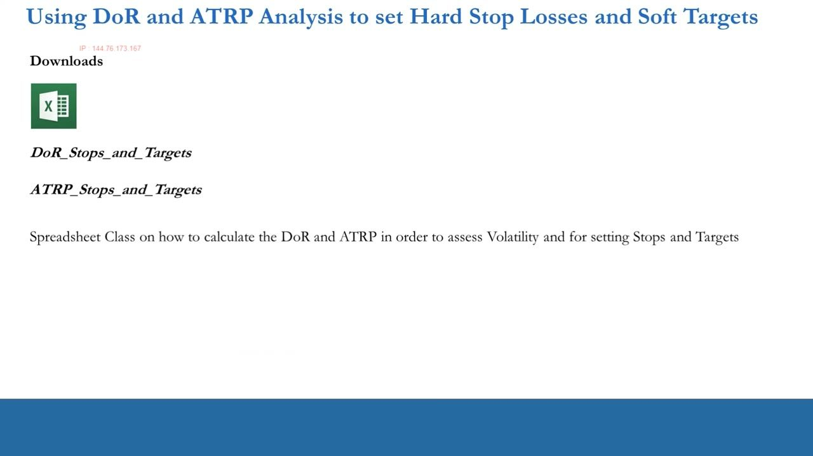
The Performance Targets PRM Serves
- R-Score is the ratio of dollar profits to dollar losses from your realized (closed-trade) P&L — a good target is about 1.5 or higher, a great one around 2 or above.
- Win/loss rate is the percentage of winning versus losing closed trades — 60/40 is good, 55/45 is okay, and 65/35 is really really good over the long term.
- We use PRM techniques (stops, targets, portfolio limits) precisely so that, over many trades, we hit these R-Score and win/loss targets.
The whole point of PRM is measurable performance: it keeps you out of a situation that becomes untenable over a long series of trades. R-Score and win/loss rate are the scorecard PRM is built to protect.
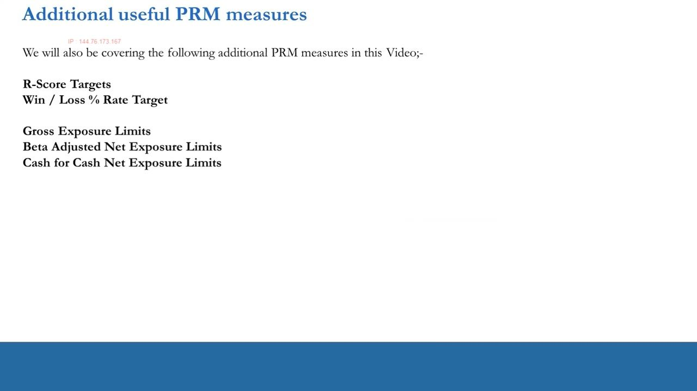
The L/S Equities Portfolio PRM Targets & Ranges
- R-Score Target: > 1.5.
- Win / Loss % Rate Target: 60/40.
- Gross Exposure Limits: U.S. Stocks 2X Margin; ROW CFDS 4X Margin.
- Beta Adjusted Net Exposure Limits: +/- 30%.
- Cash for Cash Net Exposure Limits: +/- 50%.
This single reference card is the spine of the whole lesson. Every number below is either a way to earn these targets (stops/targets) or a hard ceiling that keeps the book inside these ranges.
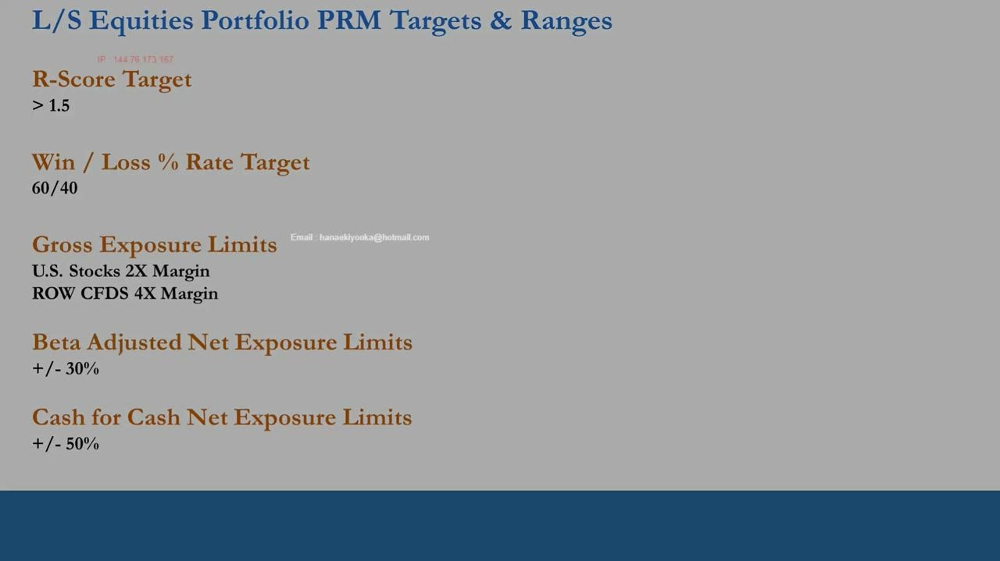
Building the DoR Sheet: Data Prep
- Pull the max price history for the ticker (e.g. ZNGA) from Yahoo Finance at MONTHLY frequency; open the CSV in Excel.
- Reformat dates (dd-mm-yyyy), delete the volume column (not needed for DoR), and sort newest-to-oldest — finance convention runs time series in descending order.
- Remove the most recent row if it's an incomplete period — prices must be split evenly through time.
The assumption is that fundamental and timing work is already done; all we're doing now is measuring an asset's historical volatility to size sensible stops and targets.
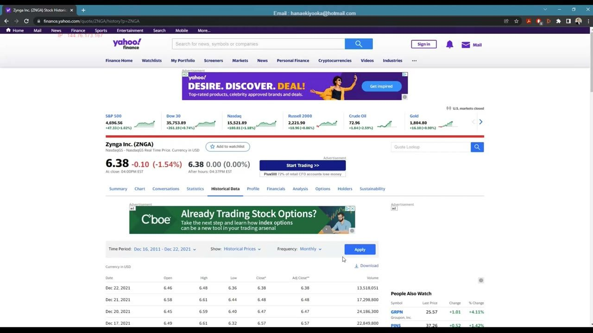
Dual Returns: Close-to-Close and High-to-Low
- Close-to-close monthly return in column G: =F2/F3-1 (current close ÷ previous close − 1), auto-filled down; delete the final #DIV/0! cell.
- High-to-low monthly return in column H: =C2/D2-1 (high ÷ low − 1), auto-filled down.
- Format both columns as percentages; you run a dual distribution because close-to-close governs the stop while high-to-low reveals the intramonth range available to hit a target.
Two distributions, two jobs: close-to-close tells you how often the stock closes down a given amount (stop risk), high-to-low tells you how much room there is inside a month for a target to be reached.
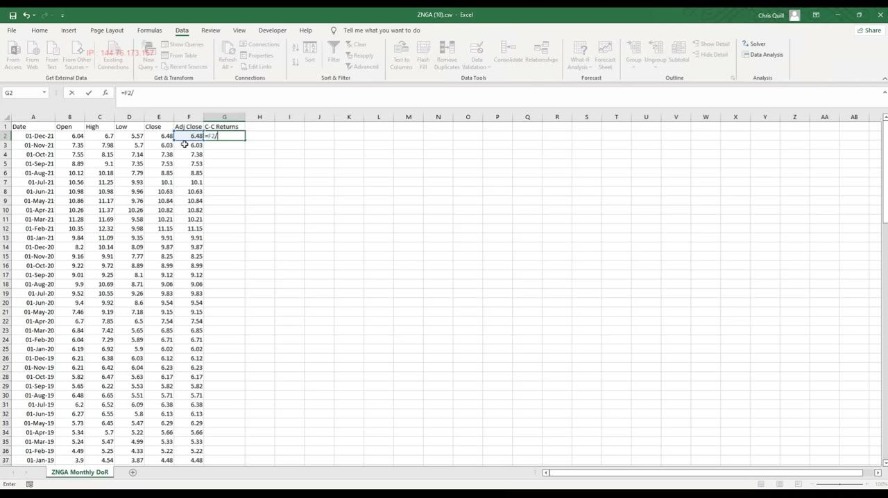
Histogram, Descriptive Stats and Cumulative Frequency
- Define histogram intervals from −0.25 to +0.25 in 0.05 (5%) steps, then use Data Analysis → Histogram (input = returns, bin = intervals) to count frequencies.
- Convert frequency to a percentage of the total count, then build a cumulative frequency % column (=N5+O4 copied down) — e.g. 49.58% of returns are 0% or below, 89% are +15% or below.
- Descriptive Statistics (centrality, volatility) is generated for context but is not strictly needed to set stops and targets.
The cumulative frequency column is the workhorse: it lets you say directly what percentage chance a given move has historically had, which is exactly what you need to place a stop with a known hit probability.
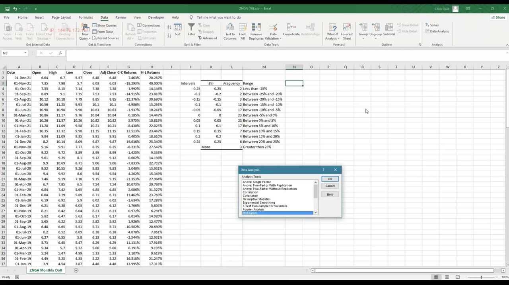
The Percentile Ladder: Finer Detail
- Percentiles give the return value below which a given percentage of observations lie — the 50th percentile is the median.
- Built with =PERCENTILE.INC($G,rank) across ranks 1–15% (by 1%), 20–80% (by 5%) and 85–99% (by 1%).
- Because it isn't tied to fixed histogram bins, the percentile table lets you dial a stop to an exact chance of being triggered rather than a broad range.
Percentiles are the same idea as cumulative frequency but more granular — they let you refine a stop to, say, a 15% or 20% trigger probability instead of the coarser 25% a histogram band gives you.
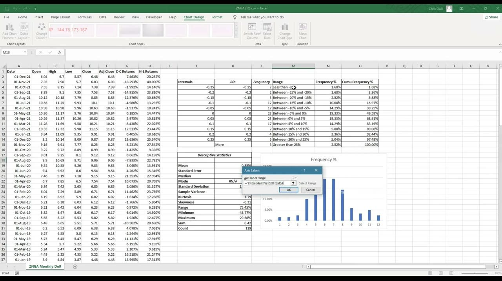
Pricing the ZNGA Long: Stop & Target
- About 25% of the time ZNGA has closed −6.86% or worse, so a 7% stop gives roughly a 75% chance of not being stopped out — at the tight end of the desired 70–85% range.
- Target = 3× stop for a 1:3 risk/reward: a 7% stop → 21% target; high-to-low data shows a >7.56% range in ~97.5% of months, so there's ample room to move.
- Settling on an 8% stop / 24% target at the current price of 6.38 (22 December 2021) yields a stop of $5.87 and a target of $7.91.
The template turns your chosen stop/target percentages plus the live price into dollar levels. The high-to-low distribution is the reassurance that enough volatility exists to actually reach the target.
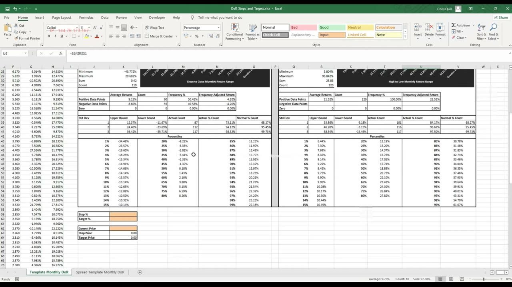
Pricing the ALGN Short: Harder to Balance
- ALGN is more volatile (longer history through 2008); reading the SHORT side you use the 75th percentage rank (~10% return) for a ~25%-triggered stop, not the 25th.
- A naive 14.33% stop → 42% target is far too unlikely (only ~0.8% of months hit −40.53%); the 70th–75th rank (≈8.4–10%) is more workable.
- Chosen 9% stop / 27% target at current price 645.89 gives a stop of 587.76 and a target of 820.28.
Shorts are harder to set stops for because a strong bull market can stop them out on market moves alone. That reality is exactly why the portfolio-level limits later in the lesson matter.
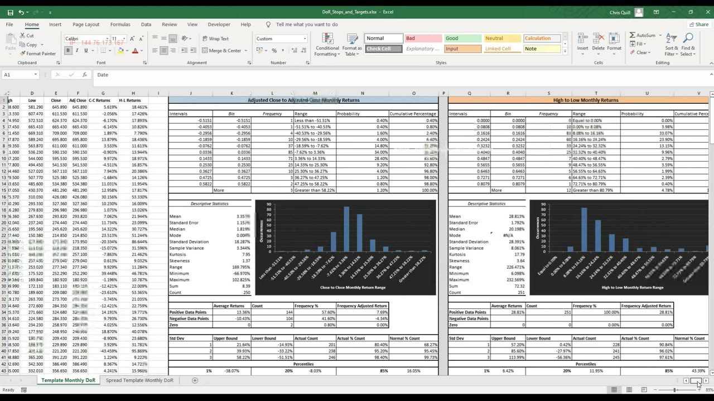
Spreads: Mental Stops on a Pair
- Combining a long and short into a pair mitigates market-triggered stops, since a market move on one leg is partly offset by the other.
- The spread template takes gross-exposure inputs for each leg (here $10,000 long / $10,000 short), uses close-to-close data ONLY (no high-to-low for spreads), and computes weighted spread returns.
- A 6% stop / 18% target maps to a MENTAL cumulative $1,200 stop and $3,600 target across the two positions — cut both legs when the combined P&L hits −$1,200.
Brokers can't hold a stop on a spread, so pair stops must be mental, cumulative-dollar notes. They complement, not replace, the individual stops — you use both together.
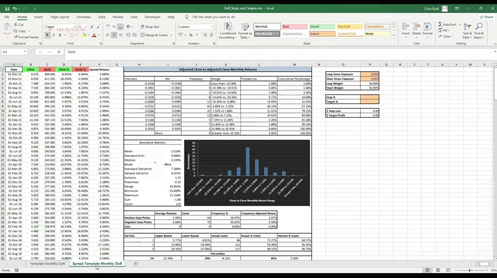
Scaling Into a Winning Spread
- When the spread hits its +$3,600 target (e.g. long grows to $13,800, short to $10,200), you decide whether and how to add — generally add to winners.
- Rebalancing $24,000 gross + $10,000 new exposure to equal weight puts $17,000 on each leg; the running stop is re-priced and applied on top of the prior $3,600 profit.
- Changing weights changes the historical spread returns, so you must reassess whether the same stop/target percentages still hold.
The pair is managed as one position: targets shift stops upward, and every re-weighting is layered on the P&L already banked, keeping the trade's cumulative risk explicit.
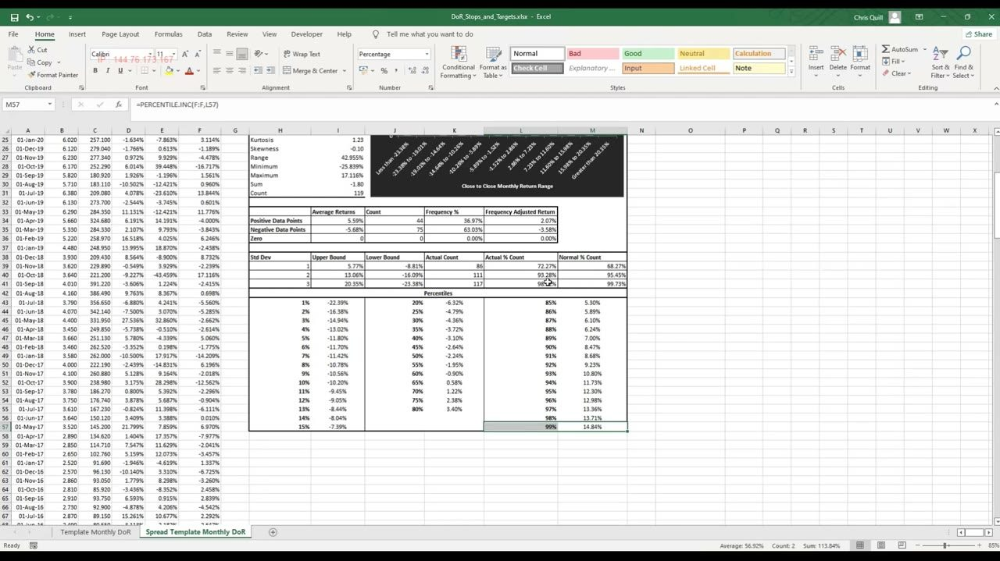
ATRP: Weekly for Stops, Quarterly for Targets
- True range takes the max of intraperiod high-low, |high − prev close| and |prev close − low|, divided by the open — capturing out-of-hours moves a simple high-low misses.
- Weekly ATRP values guide stop losses; quarterly ATRP values guide targets — a rule learned from experience, not proven mathematically.
- ALGN read ~8–10% weekly (matching its DoR stop) and skewed quarterly targets ~35–40% because of historic crashes; ZNGA came out ~7–9% weekly, consistent with its 8% DoR stop.
ATRP is the faster, lower-detail alternative to DoR. Crucially, both methods converged on the same 8–10% stop for ALGN and ~8% for ZNGA — cross-checking builds confidence in the number.
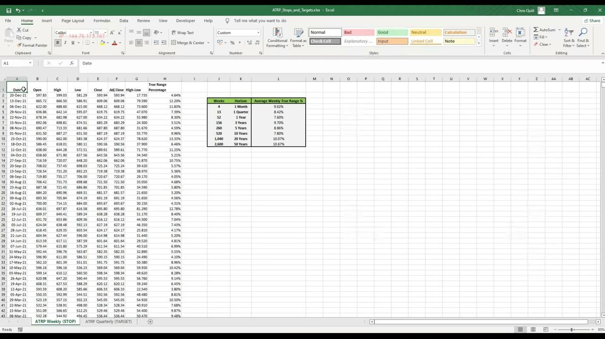
Exposure Definitions: The Math of a Book
- Position gross exposure = current price × number of shares; portfolio gross = Σ|position gross|, and gross ÷ margin = the leverage factor.
- Net exposure of a position = gross × (+1 long / −1 short); net dollar weighting = net ÷ portfolio gross; weighted beta = stock beta × net weight.
- Portfolio beta = Σ(net weight × beta); the portfolio's gross, net, net-weight and beta are all just sums of the individual position values.
These identities are the plumbing behind every limit. Gross feeds the leverage limit, net-weight feeds the cash-net limit, and the beta sum feeds the beta-net limit.
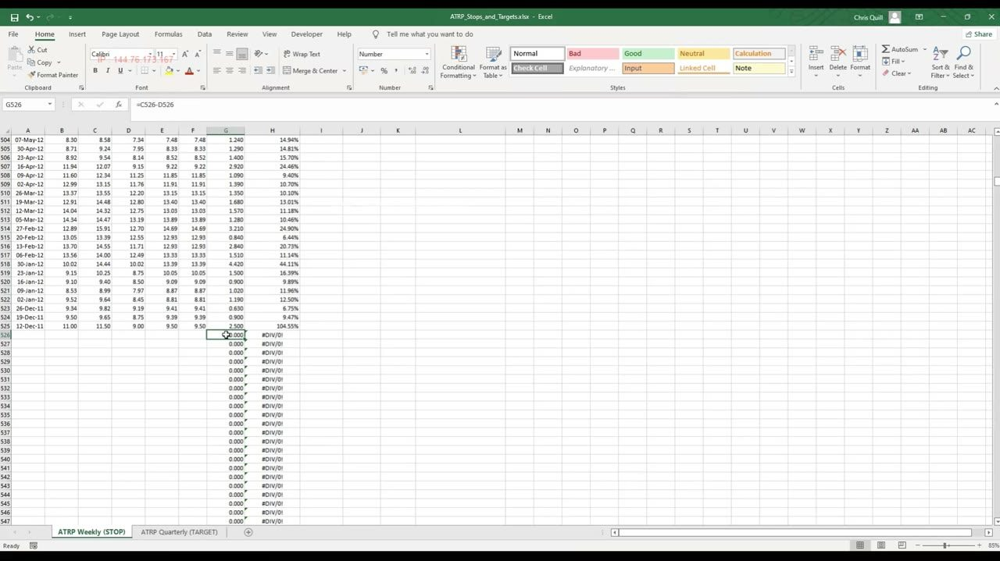
Gross Exposure = Your Leverage Limit
- The example book runs $99,810 gross — about $100k of risk; at 2X (US legal cap) that needs $50k margin, comfortably within limits.
- ROW CFDs can offer up to 10X, but that means a 10% portfolio drop wipes the whole margin — 2–4X is okay for a well-run L/S book, higher gets dangerous.
- If the same $99k gross sat on only $20k margin, that's ~5X — almost certainly too much risk; a 10% drop halves the margin.
Gross exposure limits exist to control leverage's amplification of losses. Start new at the low end (nearer 2X) and only build toward 4X with proven success.
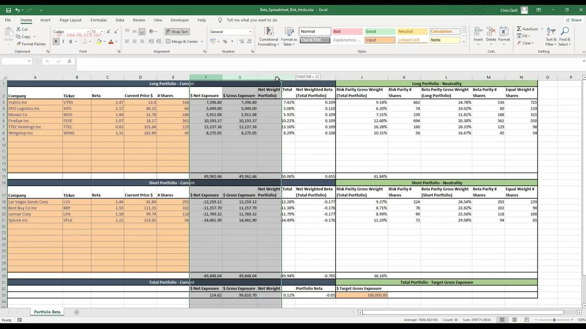
Beta-Net ±30% and Cash-Net ±50%
- Cash-net here is $114, or 0.11% net weight — cash-neutral — and portfolio beta is ~0%, so the book is genuinely market-neutral (implying no macro bias).
- Beta-net band: ±5% is very neutral, ~10% a weak bias, above 20% strong, and beyond ±30% the long/short benefits deteriorate — exceed only on exceptional conviction.
- Cash-net is a cruder measure so it gets a wider ±50% band; watch it alongside beta (a +45% cash-net can coexist with a +15% beta-net) — beta is the one to trust more.
Beta-adjusted net is the real market-bias gauge because it accounts for each stock's sensitivity; cash-net is a rough companion. Keep both under control and know where each sits.
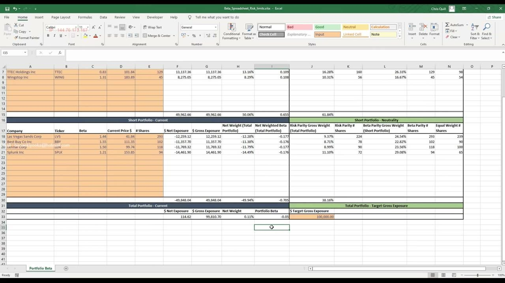
The Limit-Breach Scenario: Why It All Matters
- Start near-neutral: gross $99,810, cash-net 0.11%, portfolio beta ≈ −5%.
- A +10% market rally stops out two shorts (Lennar Corp and Best Buy); removing them swings portfolio beta from −5% to +48%, breaching the ±30% limit.
- If the market then reverses −10%, a ~0.5 beta means a ~5% loss — and at 4X leverage that's a ~20% margin hit, a large, easily avoidable loss.
This is the concrete case for enforcing limits: getting whipsawed out of one side of the book quietly turns a market-neutral portfolio into a big directional bet. Rebalancing weights or reinstating shorts would have prevented it.
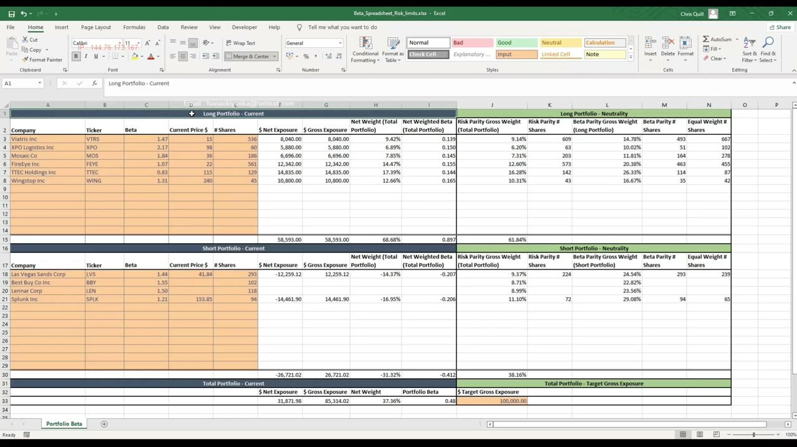
Glossary
- PRM (Preventative Risk Management)Proactive risk control — setting stops, targets and portfolio limits in advance — as opposed to reactive risk management (RRM) after a trade moves.
- R-ScoreRatio of dollar profits to dollar losses from realized (closed-trade) P&L. Good ≥ 1.5, great ≈ 2 or above.
- Win/Loss RatePercentage of winning vs losing closed trades. 60/40 good, 55/45 okay, 65/35 really really good over the long term.
- DoR (Distribution of Returns)A dual histogram/percentile analysis of monthly close-to-close and high-to-low returns used to size stops and targets from historical volatility.
- ATRP (Average True Range %)Average of the true-range percentages over a window; true range captures out-of-hours moves. Weekly guides stops, quarterly guides targets.
- Gross ExposurePosition: price × shares. Portfolio: Σ|position gross|. Gross ÷ margin = the leverage factor. US cap 2X, ROW CFD self-limit ~4X.
- Net ExposurePosition gross × (+1 long / −1 short). Portfolio net = sum across positions; shows how long or short the book is on a cash basis.
- Net Dollar WeightingA position's net exposure divided by portfolio gross exposure; the position's signed weight in the book.
- Weighted Beta / Portfolio BetaWeighted beta = stock beta × net weight. Portfolio beta = Σ(net weight × beta); the true market-bias measure, kept within ±30%.
- Cash-for-Cash Net ExposureThe cruder net-weight measure of bias (ignores individual betas), given a wider ±50% band and watched alongside beta-net.
- Spread / PairA long and short combined and managed as one position with mental, cumulative-dollar stops and targets (brokers can't hold spread stops).
- Hard stop / Soft targetStops are firm (hard) to remove human bias; targets are soft — a stop with ~70–85% chance of not triggering, and a target set at 3× the stop (1:3).